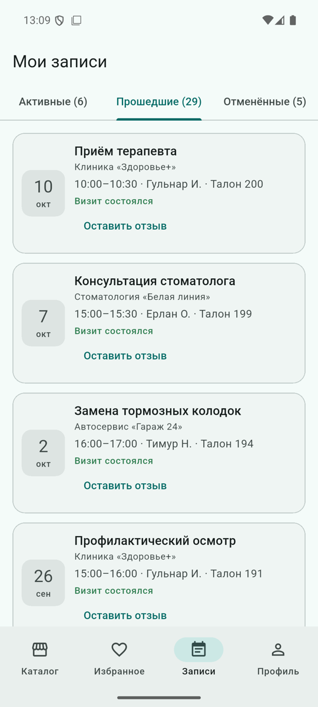

Отзывы и рейтинги
Оценить место можно только после реального визита, один раз на визит. Рейтинг организации и специалиста никогда не хранится — он каждый раз считается из отзывов.
Правила
- Отзыв привязан к записи (
bookingId): клиент, организация, услуга и специалист берутся из неё. - Оставить отзыв можно только на свою запись со статусом «Визит состоялся» (
completed). Статус ставит владелец кнопкой «Визит состоялся» после начала визита; в демо-данных прошедшие визиты уже отмечены. - Один отзыв на одну запись. После удаления отзыва визит снова можно оценить.
- Оценка 1–5 обязательна, текст — до 1000 символов, необязателен.
- Автор может изменить или удалить свой отзыв; у изменённого отзыва показывается пометка «изменён».
- Владелец может ответить на отзыв своей организации (до 500 символов), но не может изменить оценку или текст клиента.
Правила — lib/features/reviews/domain/review_rules.dart, проверка — в LocalReviewRepository. Сообщения в UI: «Отзыв можно оставить только один раз и только после завершённого визита».
Агрегаты
RatingSummary.of(reviews) — чистая функция: количество, среднее и распределение по звёздам. Без отзывов среднее — null («Нет отзывов»), а не 0. Используется:
- в карточке места каталога и на странице организации: «★ 4,6 · 17 отзывов»;
- для специалиста — по отзывам с его
specialistId; рейтинг показывается только при трёх и более отзывах («Мало отзывов для рейтинга»); - в аналитике владельца — средняя оценка за период и за всё время.
Почему не хранить средний рейтинг в организации: при каждом создании, изменении и удалении отзыва его пришлось бы пересчитывать, и любая ошибка привела бы к расхождению. На демо-объёме (десятки отзывов) расчёт занимает микросекунды. На сервере (фаза B) агрегат можно материализовать, но источником истины останутся отзывы.
Экраны





- Сортировка: «Сначала новые», «Сначала высокие оценки», «Сначала низкие оценки»; при равной оценке — по дате.
- Свой отзыв: долгое нажатие или кнопка «⋮» открывают одно и то же меню «Изменить отзыв / Удалить отзыв». Удаление — только после подтверждения.
- Звёзды формы — отдельные кнопки с подписью «Оценка N из 5» для TalkBack.
- Полоски распределения — обычные виджеты с текстовой подписью «5 звезд: 12 отзывов».
Тесты
test/features/reviews/review_repository_test.dart— право на отзыв, один отзыв на запись, валидация, изменение и удаление с пересчётом рейтинга, ответ владельца,RatingSummary.test/features/reviews/reviews_screen_test.dart— сортировка, долгое нажатие и «⋮», отсутствие меню у чужих отзывов.test/app/booking_flow_test.dart— отзыв из вкладки «Прошедшие» меняет рейтинг организации; интеграционный сценарий 2 — то же на эмуляторе.
Отметка «полезный отзыв» не реализована: в MVP она не нужна и не должна смешиваться с избранным.